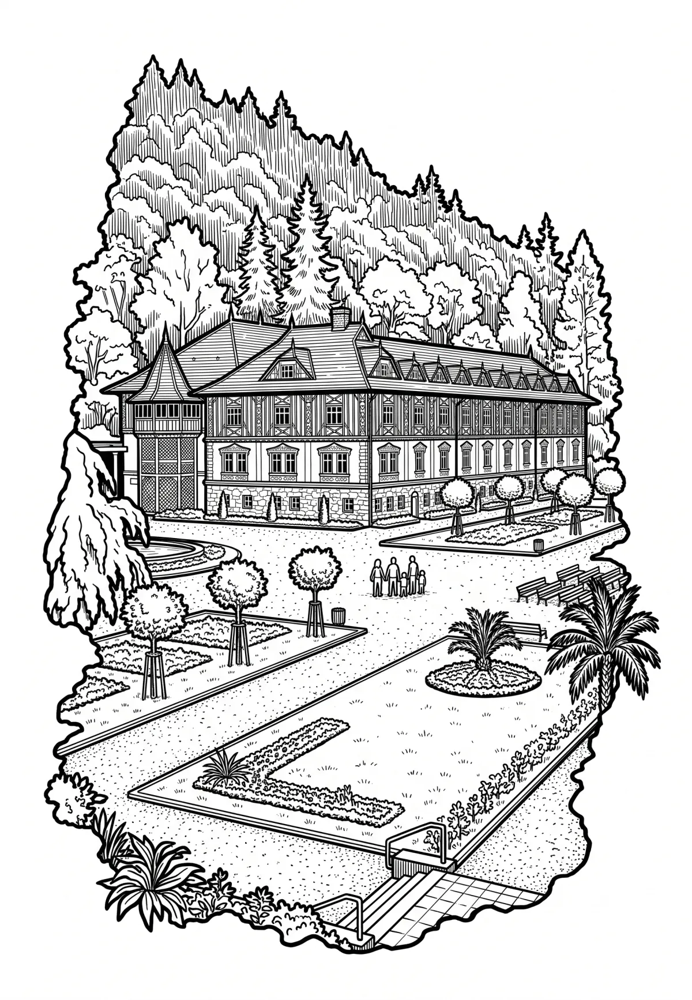

Luhačovice
Luhačovice (německy Luhatschowitz) jsou město v okrese Zlín ve Zlínském kraji. Leží šestnáct kilometrů jihovýchodně od okresního a zároveň i krajského města Zlín na říčce Šťávnice. Město má katastrální výměru 33 km² (3 299 hektarů), 1 099 domů a žije zde přibližně 5 000 obyvatel.
Více na Wikipedii